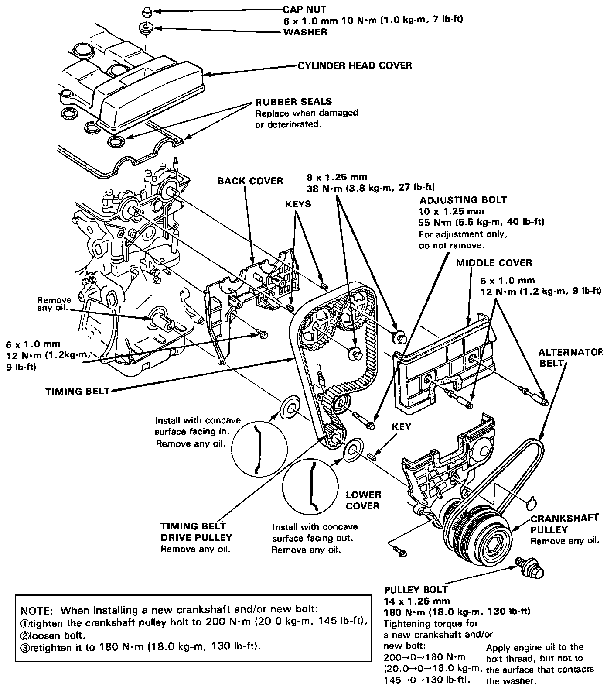

Timing Components: Diagrams

Timing Belt
NOTE: Mark the direction of rotation on the belt before removing.
NOTE: When installing a new crankshaft and/or new bolt:
(1) tighten the crankshaft pulley bolt to 200 N.m (20.0 kg.m, 145 lb.ft)
(2) loosen bolt
(3) retighten it to 180 N.m (18.0 kg.m, 130 lb.ft)